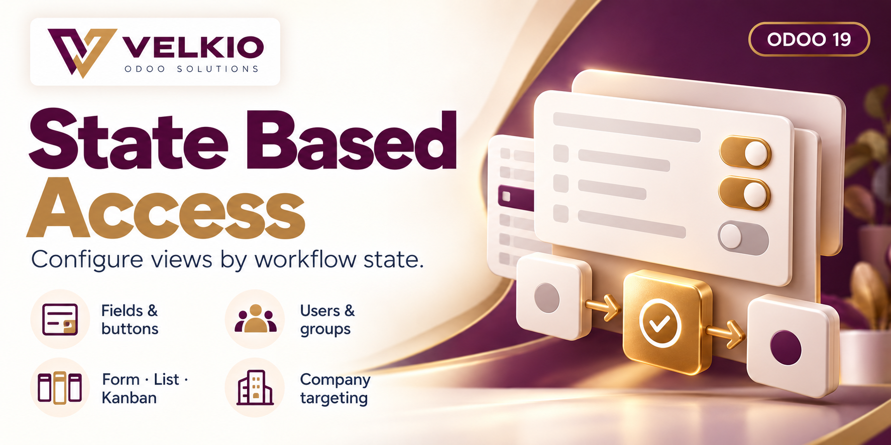

01
Field behavior
Hide selected fields, make them read-only or require a value where the view and widget support these modifiers.

VELKIO ODOO SOLUTIONS
The right interface for each workflow stage.
Configure fields, named buttons and notebook tabs for selected record states. Target users, groups and companies from one rule screen, with form, list and kanban view processing.
FEATURES
01
Hide selected fields, make them read-only or require a value where the view and widget support these modifiers.
02
Hide notebook pages and named view buttons, including object, action and smart buttons.
03
Make all form fields read-only in selected states. This option applies to form views.
04
Hide messages, log notes and activities in the form for matching users. Chatter visibility is not state-dependent.
05
Select individual internal users or groups. Either match applies; leaving both empty targets everyone in the configured active company.
06
Use selection or many2one state fields. Choose applicable states, or leave the state selection empty for every state.
COVERAGE
01
Field modifiers, named buttons, notebook tabs, whole-form read-only and chatter visibility.
02
Field modifiers and named buttons. Per-record invisibility does not remove a whole column. Editing behavior depends on the list and widget.
03
Modifiers on matching field and named button nodes, subject to the card template and widget. This is not a whole-card editing lock.
SETUP
01
Add the module to your Odoo 19 addons path, update the Apps list and install Velkio State Based Access. Dependencies: base, web and mail.
02
Grant rule maintainers State Based Access / Manager, then open State Based Access → Access Rules.
03
Select the model and a selection or many2one state field. The model’s selection field named state is proposed when available.
04
Choose users or groups and the applicable companies. Company matching uses the currently active company.
05
Configure Fields, Tabs & Buttons, and Form & Chatter. Use Sync States & Nodes to refresh available choices.
06
Check matching and nonmatching users, workflow states and companies in each relevant view. Administrators are not automatically exempt.
WORKFLOW
01
Example: choose Sales Order and its Status field. Select the confirmed state available in your database.
02
Target the intended sales users or groups and company. Keep an administrator recovery path available.
03
Make chosen fields read-only or hide selected tabs and buttons. Existing view restrictions remain in effect.
04
Open draft and confirmed records as the target user. Confirm that the intended controls change and unrelated records remain usable.
DOCUMENTATION
01
Follow the setup guide and the README bundled with the module.
02
Use the workflow example to scope rules, then refresh state and node choices after view changes.
03
Review view coverage. Many2one state synchronization loads up to 1,000 related records per sync; helper sync adds missing choices rather than rebuilding all existing entries.
TROUBLESHOOTING
01
Check that the rule is active and matches the model, active company, user or group, and selected state. Reopen the view after saving configuration.
02
Use Sync States & Nodes. The field picker offers stored fields; buttons must be named view nodes. Nested relational subviews are not rewritten by the parent rule.
03
Check other matching rules and existing view modifiers. Restrictions combine. Sequence is not an override priority.
04
Administrators can match rules too. Scope users and groups deliberately; do not assume automatic administrator exemption.
FAQ
01
No. Hidden buttons and read-only fields are interface controls, not server-side security. Configure ACLs and record rules separately.
02
No. An empty state selection applies the rule in every state. Archive the rule to deactivate it.
03
No. A selected user or membership in a selected group is sufficient. With neither selected, everyone in the configured active company matches.
04
No. Chatter hiding applies to matching form views regardless of the record state.
05
No. Whole-form read-only, notebook tabs and chatter are form features. Field and button modifier behavior depends on the rendered view and widget.
06
This module uses OPL-1, as declared in its manifest. The reference reminders module’s license does not apply to this app.
VELKIO SUPPORT
For configuration help, include the Odoo and module versions, affected model and view, rule settings and the exact error.
velkio.com · velkio.odoosolution@gmail.com